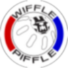
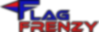

Tahoma Robotics Camp
Lead Technical Counselor
June 2014 - June 2018 // Maple Valley, WA
Since 2012, Tahoma Robotics Club host a week-long summer camp for ages 8 to 14. Starting in 2018, they extended the number of weeks they run due to high demand. Campers build VEX robots for four days then compete in a competition on the last day with their family and friends cheering them on.
2014, Round Up: I joined the counselors in 2014 with a focus in creating robot designs for the younger campers to follow and helping with the electronics and programming. Teams could choose between several different chassis and manipulators then we would help them realize their plan. The older and more adventurous teams could dream of any design and build it.
2015, Bridge Battle: For my second year working for the camp, I designed the game than the campers would compete in by tweaking an existing VEX game. I also did the previous duties of designing robot templates, electronics, and programming. For the competition, I improved the production quality by creating a highlight video presented to the families showing what their campers were learning and accomplishing over the week.
 2016, Wiffle Piffle: This time I created the entire game from scratch. This entailed designing game elements, writing rules, creating a game animation, testing gameplay to ensure balance amongst various levels of competition, and manufacturing custom trophies. Since the game was unique, I could not use the VEX tournament software to run the scoring. I had to write a custom program that handled all the required functions: match scoring, team ranking, alliance selection, elimination bracket, and more. If that wasn’t enough work, I also improved competition day production value by developing a livestreaming solution. Family and friends that could not attend the competition locally could tune in to the livestream and watch their campers compete.
 2017, Flag Frenzy: Once again I developed a unique game with all of the associated components. I did improve my animation skills which resulted in a much higher quality game animation although I no longer have the video to share. Inspired by capture the flag, robots pushed flags around the field and increased the flag’s point value with ping pong balls.
2018, Mallard Madness: Despite being away in college, the camp wanted me to create another game. This time: rubber ducks and milk crates. My animation skills improved as well, and I have the video. This year I posted all of the resources required to run the game on Github for other robotics camps to utilize. I travelled to the first week of the camp to ensure the game went smoothly and to train my replacement for the following weeks and years. For a sample of the real-time tournament software, check out the livestream archive
tags: animation, CAD, customer service, Java, manufacturing, robotics, software